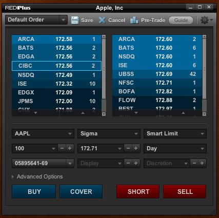
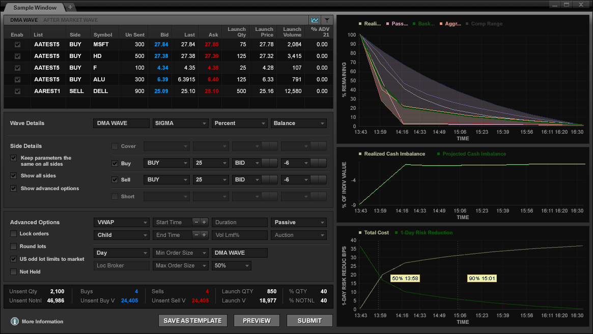
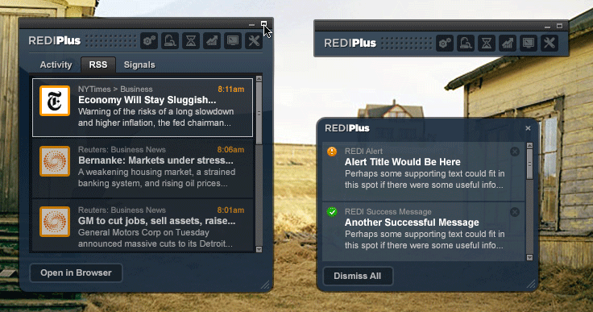

Redesign the trading platforms for the largest financial company in the world? No problem.
There is a time when you start working for a new client and you are trying to suss out the amount of time and effort needed to work on a project. You can get a good idea of how long things will take, but then you hear the words “We want to redesign our trading platform” and just like that, 2 years go by.
Goldman Sachs is THE financial institution. They needed a lot of work done with internal tools and trading applications. These tools are used for stock trading from both the company itself and their clients. These are all pixel by pixel composed C++ apps that needed to be rebuilt from the ground up, both in functionality and concept. The team at Goldman Sachs was absolutely amazing to work with. They were easily some of the smartest people I have ever met and were completely open to new ideas and ways of looking at their applications. Over 3 years, I had the chance to work with a number of different branches of Goldman Sachs and while they were all very different products and teams, they were all very smart and personable people.
The work itself was intimidating at first. It’s probably impossible to try to learn everything there is about stock trading in order to redesign a trading platform. The strategy we used to tackle such a large project was to try to focus on what traders really wanted to do and try to find a way to remove all the obstacles in their way. As we examined once piece of this application at a time, we found commonalities that became the foundation of an overall workflow and style. It’s hard to sum up such a large amount of work, but I can say now that there isn’t a project out there that can intimidate me.
- 
- 
- 